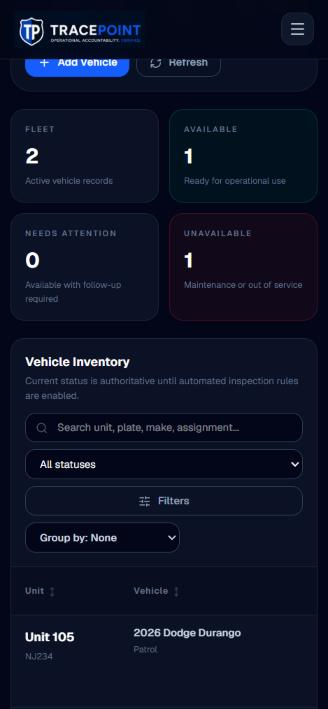
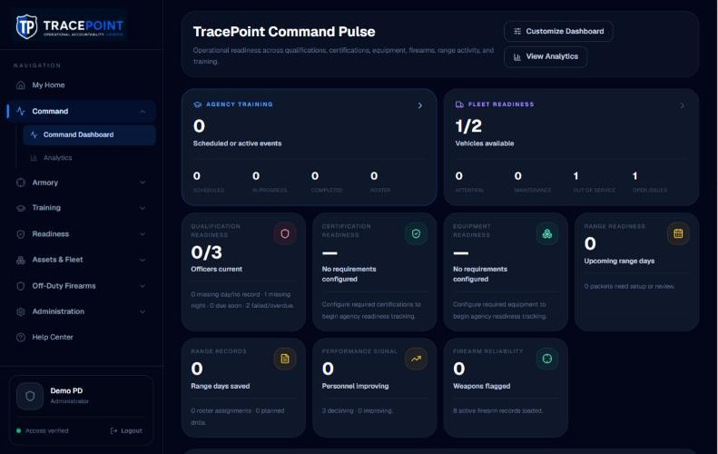
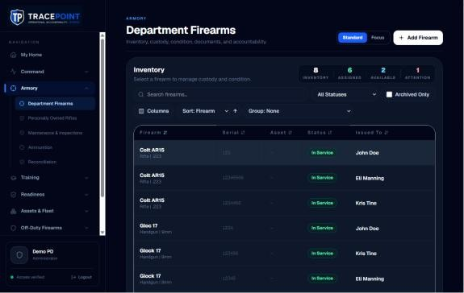
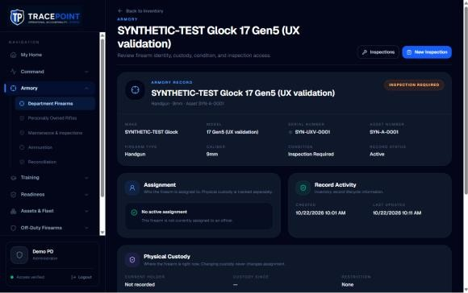

TracePoint Unified UI/UX Modernization Blueprint
Sources: Part 1 Visual Review · Part 2 Workflow & Usability Review · Validation Handoff (functional defects, owned by the development conversation)
0 · Baseline & coordination
Implement against the verified post-remediation baseline, not 22e543d. Every screenshot and measurement in the four reviews comes from staging build 22e543d, which has none of the remediation batches (B3, B8, B10, F3/F6a, UX-RB). Use those observations to explain intent. Don't treat them as the current state of the code.
The development conversation owns operational remediation and release safety. Modernization starts only after it declares a verified baseline: the remediation merged, deployed to staging, and its validation suite passing.
Re-baseline steps (before Release 1 begins)
- Record the baseline: the commit SHA, the staging
dplvalue, and the passing remediation evidence (handoff SV-01 to SV-30 re-checked). - Re-capture the "before" set on that build. Use the same screens and viewports as these reviews (1280, 768, 375) as visual-regression reference images.
- Build a feature-parity inventory per screen: every route, action, field, permission gate, confirmation, audit write and empty or error state. It's generated from the baseline, not from
22e543d. - Mark blueprint items the remediation already changed, for example the inspection defaults (UX-RB-2), range save behavior (UX-RB-5/6), custody contract (UX-RB-4), notification inbox (SV-05) and readiness counts (SV-04, SV-07, SV-08). Adjust those items to build on the remediated behavior rather than redesign it.
- Freeze shared contracts the UI will rely on: readiness source, inbox payload, custody operations, range workspace save API. UI work never changes these. Requests for changes go to the development conversation.
Ownership rule: modernization changes presentation and UI composition only. Any change to save semantics, validation, permissions, audit writes or API contracts belongs to the development conversation and is listed in §2b as backend-dependent.
1 · Unified design direction
Keep: the dark navy command-center identity, the TracePoint shield and blue accent, Geist type, the grouped sidebar, and the strong patterns already in the product (Help Center, the vehicle record header, the Qualifications split view, the Training Event dialog, Pre-Range Readiness, the scoring board's phone layout). Change: how screens are put together. Every screen should be built from the same few templates and components, organized around the person and the task rather than the module.
Page layouts & navigation
- A top bar with global search (officer, serial, asset, unit, plate), the notification bell and a user menu (profile, my notifications, sign out).
- The sidebar gains Home · My work at the top. The active group opens automatically. At 768–1279px it collapses to an icon rail rather than a hamburger.
- Five templates: List, Record, Dashboard, Form / Wizard, Settings. Every record, tab and filter state has a URL.
- The page title always matches the menu label. A breadcrumb shows the module.
Visual hierarchy
- Order every screen as: what needs action, then the summary, then the detail.
- One primary action per view, in the header or sticky footer.
- Cards only for objects. Sections are plain areas with a heading. Never a card inside a card.
- Data is set larger and brighter than its label.
Typography & spacing
- Geist: 12 caption · 13 label · 14 body · 16 emphasis · 20 section · 24 title · 28–32 KPI.
- Geist Mono for serials, asset tags, plates, scores and counts.
- Sentence-case labels. Uppercase only in table headers. Nothing under 12px.
- A 4px spacing grid. Radius 6 (controls), 10 (cards), full (chips).
Buttons, forms & dialogs
- Buttons: primary, secondary, quiet and destructive, at 32 or 40px (44px on touch).
- Field: a visible label above, help text below, an inline error. No placeholder-only inputs.
- Dialog for short creates (the Training Event pattern). Sheet (side or bottom) for record actions. ConfirmDialog only for consequential actions (see §1b). No native browser prompts.
- Creates are saved by an explicit Create button. Ongoing work (range scoring, notes, drafts) autosaves and shows its status. Explicit forms have one Save that says what it saves.
Cards, tables & filters
- DataTable: sortable headers, pinned first column, column chooser, dark scrollbar, and the row opens the record.
- FilterBar: search plus up to three chips inline, with the rest in a Filters sheet. Shown as a single "Filters (n)" button below 768px.
- Below 640px, rows become cards showing the same fields in priority order.
- Selecting a row opens a right-side drawer with a "Full record" link.
Status & notifications
- StatusChip with five roles (success, warning, danger, info, neutral): a dot, a sentence-case label and a tooltip giving the reason.
- Status color appears only on status, never on a zero or for decoration.
- One inbox, through the bell and on Home. Every item says what happened, to whom, and opens the record.
- Toasts confirm a completed action in plain words. Errors explain the next step.
Dashboards & data
- "Needs action" list first, then one KPI strip (four tiles), then module cards with meters.
- Every number is a link to the filtered list behind it.
- Loading is a skeleton, failure is "Couldn't load · Retry", and empty is a neutral state with a next step.
- All readiness numbers come from one readiness source, which the development conversation owns.
Responsive behavior
- Desktop ≥1280: sidebar, top bar, table plus drawer.
- Tablet 768–1279: icon rail, table with fewer columns, drawer as an overlay.
- Phone <768: bottom bar for Home / Search / Inbox / Menu, card lists, sticky primary action, 44px targets.
- Field flows (inspection, scoring, issue reports) are designed phone-first.
Terminology
- Command Dashboard (not "Command Pulse"), Range Days, Qualifications, Shared supplies (not "Pooled stock"), On hand (not "Standing total"), Duty restrictions, Range packet.
- Verbs on buttons: "Inspect vehicle", "Report a problem", "Close range day", "Use template".
- No system jargon ("authoritative", "hybrid readiness", "normalized targets") and no developer notes.
Shared components (build once)
- AppShell (top bar, sidebar or rail, bottom bar) · PageHeader · Button · StatusChip · KpiTile
- DataTable + CardList · FilterBar / FilterSheet · Drawer / Sheet · Dialog · ConfirmDialog
- Field · SegmentedControl · Checklist · EntityLabel (never an ID) · AsyncState · EmptyState · Toast
1b · Safety & integrity guardrails
These are non-negotiable. A redesign that weakens any of them is rejected, however much cleaner it looks.
Explicit inspection acknowledgments
- Every checklist item starts unanswered. Nothing is pre-set to Pass (matching UX-RB-2).
- Safety acknowledgments (Weapon cleared, Ammunition removed, the vehicle's critical items) must be answered individually. "Mark remaining as Pass" never covers them.
- Submit stays disabled, and lists what's missing, until required items are answered.
- The result and its status effect ("goes out of service") are shown before Submit.
Reliable range autosave
- Scoring keeps autosaving. There's no extra Save confirmation per officer or run.
- Each row's status comes only from the server's reply: Saved / Saving / Not synced / Conflict. Never optimistic.
- Unsynced work survives reload and offline (UX-RB-5 design). The UI never offers an action that discards it.
- Corrections to saved scores use an explicit "Correct result" with a reason, recorded in history.
Role permissions
- The UI hides or disables what a role can't do, but the server stays the authority. No permission logic moves into components.
- "My work" cards and global search return only what the user's role may see, enforced in the API (backend-dependent, §2b).
- Each redesigned screen is verified with Officer, Instructor, Armorer, Fleet Manager, Supervisor and Admin accounts before release.
Audit controls
- Every action that writes an audit entry today still does, with the same fields: actor, time, reason, before and after.
- Reason fields stay required where they are today (status overrides, custody changes, restrictions, count variances).
- Sheets show a one-line audit notice ("Recorded in custody history with your name and time") so users know it's accountable.
- No redesign removes history views. They become easier to reach, from the record's History tab.
When to ask for confirmation
Confirmation is for actions with consequences, not for routine saving. Over-confirming trains people to click through warnings.
| Action type | Examples | Pattern |
|---|---|---|
| Routine, reversible edits | Range scores, notes, roster attendance, drafts, filters, column choices | Autosave with an inline status. No confirmation. |
| Explicit creates and form saves | New range day, add firearm, add vehicle, issue report, training event | One clearly labelled button ("Create range day"). A toast confirms it. No second dialog. |
| Accountable state changes | Custody transfer, check-out and check-in, vehicle or firearm status, restriction set or clear, inventory checkout | A sheet with a required reason, a before → after summary and an audit notice. The submit button names the effect. No extra "Are you sure?". |
| Safety-critical submissions | Firearm and vehicle inspections, qualification finalization, closing a range day | Explicit per-item answers plus a result summary before Submit. Required acknowledgments can't be bulk-filled. |
| Destructive or broad-impact | Archive or retire, unpublish a template, change agency rules, lock a range day, role changes | ConfirmDialog naming the record and the impact. Typed confirmation only for irreversible actions. |
2 · Highest-value improvements (combined)
Eighteen items consolidate Part 1 and Part 2. Priority: P0 start now · P1 next · P2 after. Difficulty: S = days, M = 1–3 weeks, L = 3–6 weeks (one engineer).
| # | Improvement | Affected modules | Current problem | Recommended solution | User benefit | Diff. | Pri. | Shared comp. |
|---|---|---|---|---|---|---|---|---|
| 1 | Design tokens | All | globals.css is the create-next-app default. Colors, sizes and radii are hand-picked per page. | Color roles, type scale, spacing and radius in CSS variables and the Tailwind theme | Consistency everywhere, and much cheaper polish later | S | P0 | Foundation |
| 2 | AppShell with search, bell and user menu | All | No global search or bell. Personal settings sit inside Admin Settings. Tablets lose navigation. | Top bar (search, bell, user menu), icon rail on tablet, bottom bar on phone | Find any officer or asset in one step. Navigation always available. | M | P0 | AppShell |
| 3 | Records with URLs, opened from every list and dashboard | Firearms, Range Days, Fleet, Command, Alerts, Settings | Rows don't open records. The firearm record is unreachable from the list. Tabs aren't in the URL. | Row opens a drawer with a "Full record" link. Route every record and tab. | 3–4 fewer clicks per follow-up. Back, refresh and sharing work. | M | P0 | DataTable, Drawer |
| 4 | "My work" on Home | Home, Firearms, Equipment, Fleet, Qualifications, Off-Duty | Nothing is personal. Officers search department lists. | Cards for my gear, my vehicle (Inspect / Report), my readiness, my requests, my approvals | Officer tasks drop from 5–8 clicks to 1–2 | M | P0 | KpiTile, CardList |
| 5 | One attention inbox and one approvals queue | Home, Command, Training Alerts, Off-Duty, Rifles | Three attention lists and approvals in two modules. Items open module home pages. | A single inbox where items open records, plus a single Approvals queue for command | Supervisors see one source of truth | M | P0 | Inbox list |
| 6 | PageHeader + Button kit | All | Four header styles, about 20 title styles, rainbow buttons, wrapping labels | One header (breadcrumb, title, chip, one primary, overflow) and four button variants | Every page reads the same way, and the next step is obvious | S | P0 | PageHeader, Button |
| 7 | Legible type and flattened layout | All, especially Range, Quals, Fleet, Alerts | 636 uses of 9–11px. Up to 41% uppercase. Cards inside cards. | 12px minimum, sentence-case labels, object-only cards | Faster scanning, especially on the range and in vehicles | M | P1 | Tokens |
| 8 | DataTable + phone CardList | Fleet, Firearms, Inventory, Equipment, Docs | Fleet table is 1,260px. Controls differ per module. White scrollbars. | One table component with a card mode under 640px and a FilterBar or FilterSheet | Usable lists on every device | M | P1 | DataTable, FilterBar |
| 9 | Field-grade checklists | Vehicle inspection, firearm inspection, equipment checks | 41×23px buttons, two buttons to start, Close as the main action, 4,042px desktop form | A Checklist component: 44px segmented control, note only on a defect, sticky summary and Submit | Inspections done quickly and accurately in the field | M | P1 | Checklist, Segmented |
| 10 | Range day accelerators | Range Days | About 30 clicks for one small qualification day. Roster is one officer at a time. | Multi-select roster, duty firearms filled in, mark all present, day templates, "Close range day" | About 12–15 clicks saved per day. Clear completion. | M | P1 | Partly |
| 11 | Explicit creates, accountable state changes | Range Days, Fleet status, Inventory, Docs | New Range Day saves instantly. One-click status pills. Native prompts. | Dialog for creates, StatusChangeSheet with a reason (per §1b), ConfirmDialog only for destructive actions | No junk records. No accidental out-of-service changes. No confirmation fatigue. | S | P1 | Dialog, Sheet |
| 12 | KpiTile + StatusChip | Dashboard, Range, Fleet, Equipment, Alerts, Off-Duty | Three tile designs, rainbow icons, colored zeros, mixed chip styles | One tile (neutral at zero, linked) and one chip with five roles | Color means something, and every number leads somewhere | S | P1 | KpiTile, StatusChip |
| 13 | Command Dashboard re-layout | Command, Analytics | Action list sits below nine tiles. Grid gaps. Icons with no meaning. | Needs action first, then a KPI strip, then module cards with meters | Command sees what to do in the first screen | S | P1 | Templates |
| 14 | One home per setting | Settings, Rifles, Ammunition, Armory, Import | Four pairs of duplicate config screens. Two Save buttons. Three import entry points. | Settings left rail by module, "Manage" links from modules, one Import page | Admins find and save settings with confidence | M | P1 | Settings template |
| 15 | Guided first-run and empty states | Equipment, Inventory, Certifications, Ammunition, Docs | Hidden prerequisites (types, locations), silent buttons, blank pages | EmptyState with the next step and a short "Set up in 3 steps" guide | A new pilot agency can onboard without help | S | P1 | EmptyState |
| 16 | Honest, plain-language copy | Settings Security, Import, Fleet, Inspections, Alerts | MFA toggle not enforced, contradictory import claims, developer notes, jargon | A copy pass with a terminology glossary. State limits plainly. | Trust. Admins aren't misled. | S | P0 | — |
| 17 | Agency Documents "Use template" | Agency Documents | The screen's main purpose can't be found | Main action on each published row, plus a generated-documents list | Instructors can produce forms | S | P1 | DataTable |
| 18 | Polish pass | All | Logo box, native date pickers, empty icon rows, raw IDs, broken "?" glyphs | Transparent SVG logo, styled pickers, EntityLabel, a finish checklist | Feels like finished software | S | P2 | EntityLabel |
2b · Presentation vs. backend-dependent work
Every improvement falls into one of three tracks. Only the first can ship without the development conversation. The other two need agreed contracts first.
A · Presentational only
- #1 Design tokens
- #6 PageHeader + Button kit
- #7 Legible type, flattened layout
- #12 KpiTile + StatusChip
- #13 Command Dashboard re-layout (using existing data)
- #16 Copy and terminology pass
- #18 Polish (logo, scrollbars, glyphs, date pickers)
- #8 DataTable + phone CardList (client-side sort and filter over existing lists)
- #15 Empty states and first-run guidance (copy and links)
- Firearms drawer and views (§3D) using existing firearm, custody and inspection endpoints
B · UI workflow changes, existing APIs
- #3 Record URLs and row-to-record (new routes over existing APIs)
- #9 Field-grade Checklist (same inspection payloads as UX-RB-2)
- #11 Create dialogs, StatusChangeSheet (same endpoints, reasons already supported)
- #14 One home per setting (move existing panels and links)
- #17 Agency Documents "Use template" (existing generate endpoint, if confirmed on the baseline)
- #10 Range accelerators: "Mark all present", multi-add roster (client-side batching over the existing roster save, after UX-RB-5)
- #2 AppShell layout, tablet rail, phone bottom bar (search and bell placeholders hidden until track C lands)
C · Needs new backend
- Global search across officers, serials, assets, units and plates, scoped by role
- Unified approvals queue (off-duty, rifle program, return-to-service, remediation sign-off)
- Single attention inbox (depends on the SV-05 notification fix and the readiness source of truth)
- Personal readiness / "My work": my gear, my vehicle, my qualifications, my requests, per-user and role-scoped
- Range day templates and duty-firearm prefill (template storage, assignment lookup)
- Server-side training-alert state (B-60, needs a migration)
- Generated-documents list for Agency Documents
Release 1 (§4) takes only track A plus a small, low-risk slice of track B. Track C items keep their UI designs in this blueprint but are scheduled once their APIs exist on the verified baseline.
3 · Before & after
Four proposals, as live HTML in the proposed TracePoint system: the same navy, blue accent and Geist type. The "before" images are from 22e543d and will be re-captured on the post-remediation baseline. Data is the synthetic Demo Township data seen in staging. None of this is implemented.
A · Field workflow: Vehicle inspection (phone)

Path today: ☰ → Assets & Fleet → Fleet → scroll → row → Quick Inspect → Start Inspection → 6 items pre-set to Pass → scroll → Submit. 8 taps, 3 screens.
Path after: My vehicle card (or scan the unit's QR label) → Inspect → answer → Submit. 3 taps plus answers, 1 screen.
- Starts from the officer's own vehicle or its QR label, so there's no fleet table to search. −5 taps.
- One clear title and a context line (unit, plate, last inspection) confirm the right vehicle before anything is recorded.
- Items start unanswered, matching the UX-RB-2 fix the development conversation already made, so the screen and the record never disagree. A progress bar shows what's left.
- Pass, Defect and N/A are 44px-tall segments that work with gloves and in poor light.
- A note and "Can it be driven?" appear only on a defect. That one question replaces separate Priority and Safety fields and states the consequence ("goes out of service") before submitting.
- The sticky footer summarizes the result and holds the only primary action, Submit. Leaving is the back arrow, not a big blue button.
B · Management: Fleet Management (desktop and phone)


Fleet
Export＋ Add vehicle| Unit | Vehicle | Status | Issues |
|---|---|---|---|
| 105 NJ234 | 2026 Dodge Durango | Available | None |
| SYN-901 SYNTEST1 | 2024 Ford Interceptor | Out of service | 1 open |
SYN-901
- Reason
- Brakes: critical defect
- Work order
- Open · unassigned
- Mileage
- 1,000 mi
- Plate
- SYNTEST1
Under 640px the same data renders as cards: unit and plate, a status chip, next due and issues. The filters collapse to a single Filters (1) button, and the drawer becomes a bottom sheet.
- The top bar adds global search and the bell, so a fleet manager can jump to "SYN-901" from anywhere.
- The page header follows the vehicle-record pattern: title, one primary action (Add vehicle) and a quiet secondary. The intro card is gone.
- A single KPI strip uses color only where it means something (red for out of service, amber for due), and every number links to the filtered list.
- Six columns fit at 1280px with no sideways scroll. Mileage, hours and registration move to the record. Unit and plate are in mono so they're easy to match against a physical tag.
- The row is the link. Selecting it opens a drawer with the reason and work order, so most questions are answered without leaving the list.
- Status changes go through "Change status…" (a sheet with a reason and the effect), replacing the one-tap colored pills and the native prompt.
C · Dashboard: Command Dashboard

Command Dashboard
Counts mirror what staging showed. The action list assumes the single readiness source that the development conversation is already scoping (handoff SV-04, SV-07, SV-08).
- "Needs action" comes first and fits the first screen. It's the reason a Chief opens this page.
- Each row says who, what, how old and what's missing, and has one verb button (Review, Assign, Schedule) that opens the exact record. That saves about 3 clicks per item compared with module home pages.
- A severity bar on the left edge (red, amber, blue) replaces five decorative icon colors, so severity reads at a glance.
- Four headline KPIs in one strip, with plain context lines. "Not set up" modules show an invitation instead of a large "—".
- Module cards use meters (share ready) instead of bare counts, so there are no orphaned grid slots and no wrapped uppercase labels.
- "Customize" becomes a quiet action and "Updated 10:14 AM" shows freshness. Loading uses a skeleton, never a green "0 active".
D · Core capability: Department Firearms
Firearms is where TracePoint is most distinctive and where its concepts are hardest to grasp. It needs to make four separate ideas obvious: assignment (who the firearm belongs to), physical custody (where it is right now), restriction (Duty Only / No Carry), and condition and inspection. Today these are spread across a list, a detail panel below the fold, three panel tabs, a record page the list doesn't link to, and a separate inspections module.


- "Assignment" and "Assigned To" are shown twice with the same value.
- Physical custody reads "Not recorded" for every firearm.
- The Restricted tab says "select Manage Custody", but no such control exists.
- Edit and Status are hidden under "…".
- Inspection history is never shown.
- Secure-storage setup is buried in Settings ▸ Rules Engine ▸ Armory.
Firearms
ExportStorage locations＋ Add firearm| Firearm | Serial | Custody | Status |
|---|---|---|---|
| Colt AR15 Rifle · .223 | 123 | Not recorded | In service |
| Glock 17 Handgun · 9mm | 12345 | Not recorded | In service |
| SYN-TEST Glock 17 Handgun · 9mm | SYN-UXV-0001 | Not recorded | Inspection req. |
SYN-TEST Glock 17 Gen5
Move to secure storage
Restricted check-out
Inspections reuse the field-grade Checklist from proposal A on the firearm record and in the drawer ("Inspect"). Weapon cleared and Ammunition removed stay as explicit, individually answered acknowledgments (§1b).
- Saved views replace Standard/Focus and the group selects. Armorers think in questions: "What's in storage?", "What's restricted?", "What needs inspection?", "Where is custody not recorded?". Each view is a one-tap answer with a count.
- Custody gets its own column. Assignment and custody stop being confused, and "Not recorded" is flagged amber so the gap gets fixed.
- The drawer puts assignment, custody and last inspection side by side, each with its one-line definition (reused from today's record page) and its own action. That replaces three tabs, duplicated fields and a panel below the fold.
- One primary action, Inspect, plus Custody…. Edit, Status and Restriction move into the record header's overflow menu and the Custody sheet, not hidden under "…" on the list.
- "Full record ›" always links to the record page, which gains a History tab combining custody, inspection, restriction and document events. That's the audit trail armorers and command need.
- Custody sheets show From → To, a required reason, magazines and an audit notice. The submit button names the effect ("Move to SYN-TEST Vault"). It's accountable without an extra "Are you sure?".
- Restricted custody is unmistakable: the restriction appears in the sheet header and in an amber notice, and the action becomes Request approval. The request goes to the approvals queue (track C) and custody changes only after approval, following the remediated custody contract (UX-RB-4).
- "Manage locations" is linked where it's needed, instead of living only in Settings ▸ Rules Engine ▸ Armory.
Track: the views, columns, drawer and custody-sheet layout are presentational and workflow (A/B) over existing endpoints. Restricted check-out approval routing needs the unified approvals queue (C). Custody and restriction semantics follow the post-remediation contract and aren't changed by UI work.
4 · Release 1: initial modernization release
A deliberately small first release that proves the foundation on real screens without touching workflows under remediation. It ships only track A work plus row-to-record routes on two lists, and runs on the verified post-remediation baseline (§0).
Foundations in scope
- Design tokens: color roles, type scale, spacing, radius, in
globals.cssand the Tailwind theme - Components: PageHeader, Button, StatusChip, KpiTile, Field, EmptyState, AsyncState, DataTable (with CardList under 640px), FilterBar, Drawer
- AppShell visual refresh: top bar with user menu, tablet icon rail. The search and bell slots stay hidden until track C APIs exist.
- Copy and terminology pass across all screens, plus the polish items (#16, #18)
Representative screens
- Department Firearms list: views, custody column and drawer (§3D) with the existing endpoints. Custody and inspection forms are linked as they are today.
- Fleet list (§3B): DataTable, CardList, drawer. The status change flow is unchanged in R1.
- Command Dashboard (§3C): layout and components only, fed by whatever the remediated readiness source returns
- Equipment and Certifications: empty states and first-run guidance (low traffic, low risk)
Explicitly out of R1
- Range Days and scoring: waits for UX-RB-5/6 to settle on the baseline
- Inspection Checklist redesign: R2, built on UX-RB-2 behavior
- Custody sheet changes: R2, after the UX-RB-4 contract is verified
- Global search, approvals queue, single inbox, "My work" (track C)
- Settings reorganization (R2/R3)
Quality gates
Visual regression
- Playwright screenshot tests (extending the
e2e/staging suite on the remediation branch) for each R1 screen at 1280, 768 and 375, in the default dark theme - States captured: loaded, empty, loading (skeleton), error, long-content and many-rows (seeded synthetic data)
- A component gallery page with snapshots of every variant: button, chip, tile, table and card
- The baseline images come from the post-remediation build. Diffs need design sign-off.
Feature parity
- A per-screen inventory generated before work starts: routes, actions, fields, filters, sorts, exports, permission gates, audit writes, empty and error states
- Each item is checked off in the PR with a test or recorded evidence. Any intentional change is listed and approved.
- Old URLs keep working or redirect. Deep links and query parameters are preserved.
- API calls are compared before and after in network logs for each action: same endpoints, same payloads.
Roles, accessibility, safety
- Each R1 screen is run with Officer, Instructor, Armorer, Fleet Manager, Supervisor and Admin accounts. What's visible matches the baseline.
- Automated accessibility checks (axe) show no new violations. Contrast ≥ 4.5:1, touch targets ≥ 44px on phone.
- The §1b guardrails are re-verified, though R1 doesn't touch inspection, scoring or custody saves.
- No change to any audit-log entry, compared against the baseline audit export.
Exit criteria for Release 1
- All R1 screens pass visual regression at three widths, with design-approved baselines
- The parity inventory is 100% checked, with every intentional difference approved
- The role matrix passes, with no new accessibility violations
- No API, permission or audit differences from the baseline
- A pilot-agency walkthrough (officer, armorer, supervisor) confirms the screens are faster or equal to find and use
5 · Implementation roadmap
This sequence avoids conflicting with the development conversation's current work: UX-RB release-safety, range save integrity, notification delivery and readiness correctness. Where a screen is mid-remediation, the visual change waits until that branch merges, and only touches presentation.
Verified baseline
- The development conversation declares the post-remediation baseline
- Re-capture the before images, build the parity inventory, freeze contracts (§0)
- Mark blueprint items the remediation already changed
Foundations + representative screens
Full scope and gates in §4. Also includes:
- Design tokens in
globals.cssand the theme, with no layout change - Copy pass: MFA "not enforced yet", one import capability statement, no developer notes, menu labels matching titles
- Remove the Dashboard Views tab. Add "Manage" links from modules to settings.
- Agency Documents "Use template" action
- Polish: SVG logo, dark scrollbars, the "?" glyphs
Shared components
- AppShell (top bar, search, bell, user menu, tablet rail, phone bottom bar)
- PageHeader, Button, StatusChip, KpiTile, Field, Dialog, Sheet, ConfirmDialog, EmptyState, AsyncState
- DataTable + CardList + FilterBar
- Roll out to the lowest-risk screens first: Equipment, Inventory, Agency Documents, Certifications, Off-Duty
Workflow simplifications
- Record URLs and row-to-record for Firearms, Fleet and Range Days
- "My work" on Home, one inbox, one approvals queue
- Field-grade Checklist for vehicle and firearm inspection
- Create-without-saving and StatusChangeSheet
- Guided first-run for Equipment, Inventory, Certifications
Larger redesigns
- Command Dashboard re-layout (mockup C)
- Range day accelerators: bulk roster, templates, "Close range day"
- Settings left rail, one home per rule
- Training Alerts merged into the inbox
- Usability sessions with pilot officers, instructors and armorers before and after
range-days/page.tsx (324 KB). Split the file as part of this stage.Consistency & polish
- Migrate the remaining screens to the templates
- Terminology glossary enforced in review
- Accessibility pass: contrast, labels, focus, 44px targets
- Native app parity check (iOS and Android) for the field flows
- Visual regression snapshots per template
6 · Commercial-quality assessment
Where it stands. TracePoint has the substance of a commercial product. Few competitors cover armory custody, range scoring, qualifications, fleet, equipment, off-duty authorization and document generation in one place, and its domain language is right. Its experience is that of a capable internal tool, perhaps 60–65% of the way to commercially mature. Agencies will be impressed in a demo and frustrated in week two.
What most prevents it from feeling intuitive and polished today:
- The product doesn't know who you are. No "my" anything. Every user starts at a department-wide list.
- Information doesn't connect. Dashboards and lists don't open the record behind them, records have no URLs, and three inboxes disagree.
- No shared kit. Every screen is hand-built, so it looks and behaves a little differently each time. Users can't transfer what they learned on one screen to the next.
- Field flows are designed for desktop. Small targets, long forms and a desktop table on phones.
- Screens sometimes overstate. A false all-clear while loading, MFA shown but not enforced, contradictory import claims. In public safety, trust is the product.
What would make the biggest difference for pilot agencies, in order:
- Ship the token layer, the AppShell (search, bell, user menu) and the PageHeader/Button kit. The product will immediately look like one thing.
- "My work" on Home plus row-to-record navigation. Officers and supervisors will feel the product was built for them.
- Field-grade inspection and range-day accelerators. That's where daily time is spent, and where a pilot agency forms its opinion.
- Honest states: skeletons instead of zeros, plain limits instead of implied features. Together with the development conversation's readiness fixes, this earns trust.
With Stages 1–3 complete (about 10 weeks for one or two engineers, alongside the defect work), TracePoint would present as cohesive, credible enterprise SaaS for a pilot. Stages 4–5 bring it to a premium level.